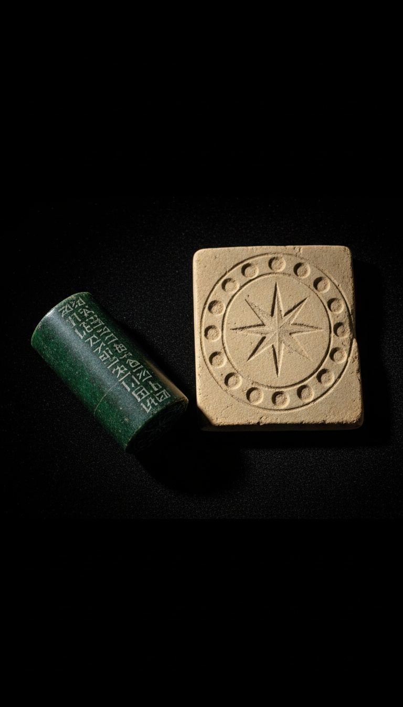

A clay cylinder carved around 2300 BCE shows our solar system with one more planet than NASA has officially confirmed in 2024. That cylinder has been sitting in a Berlin museum since 1889.
Almost nobody knows this. The receipts are public, the catalog number is searchable, and the modern astronomers proposing Planet Nine have never been asked to explain why a Sumerian scribe beat them by 4,300 years.

The VA 243 Cylinder Seal Is Real And You Can Visit It
The artifact is cataloged as VA 243 at the Vorderasiatisches Museum in Berlin, part of the Pergamon complex on Museum Island. It was carved in Akkadian Mesopotamia around 2300 BCE. The central image shows a six-pointed star surrounded by eleven smaller spheres arranged in orbit.
Count the bodies. One central star. Eleven orbiting circles. If the central object is the Sun, the orbital count exceeds the eight planets modern astronomy recognizes today. It even exceeds the nine that included Pluto before its 2006 demotion by the International Astronomical Union in Prague.
Mainstream Assyriologists read the surrounding circles as divine attendants, not planets. That is the official position. The position does not explain why the attendants are arranged in concentric orbital spacing around a radiant central body, which is the exact visual grammar used by every solar system diagram printed since Copernicus.
Zecharia Sitchin Did The Math In 1976
Sitchin published The 12th Planet in 1976 through Stein and Day. He identified the eleven orbiting bodies as the Sun, Moon, and every planet through Pluto, plus one additional body he transliterated from the cuneiform as Nibiru, meaning planet of the crossing.
Sitchin was trained in ancient Semitic languages and worked from photographs of VA 243 supplied by the Berlin museum itself. His translations have been disputed by academic Sumerologists like Michael Heiser. His count of the circles on the seal has not been disputed because the circles are visible and countable.
The Sumerians knew Pluto existed. Clyde Tombaugh discovered Pluto from Lowell Observatory in Flagstaff, Arizona in February 1930. The VA 243 seal predates that discovery by 4,230 years. Either the Sumerians guessed correctly about an invisible ice body 3.7 billion miles away, or they had a source of information that mainstream archaeology refuses to address.
Caltech Proposed Planet Nine In 2016
On January 20, 2016, Caltech astronomers Konstantin Batygin and Michael Brown published in The Astronomical Journal their proposal for a ninth planet roughly ten times the mass of Earth, orbiting twenty times farther out than Neptune. They named it Planet Nine.
The evidence is gravitational. Six trans-Neptunian objects in the Kuiper Belt cluster in orbital patterns that should not exist by chance. The probability of the clustering happening randomly was calculated at 0.007 percent. Something massive is pulling on them from the outer dark.
In October 2016 the same team published a follow-up in The Astrophysical Journal arguing that Planet Nine also explains the six-degree tilt of the Sun's rotational axis relative to the plane of the planets. That tilt has puzzled astronomers since the 1800s. A massive ninth body would solve it.
The Sumerians had Pluto on a clay tablet 4,230 years before Clyde Tombaugh found it with a telescope in Arizona.
Sumerian Astronomy Was Not Primitive
The Enuma Anu Enlil is a 700-tablet astronomical compendium compiled across centuries of Babylonian and earlier Sumerian observation. It contains predictive omen sequences for eclipses, planetary conjunctions, and stellar risings. Copies are held at the British Museum in London and the Iraq Museum in Baghdad.
Sumerian observers tracked Venus to within roughly one hour of accuracy across a 484-year synodic cycle. That precision is documented on the Venus Tablet of Ammisaduqa, dated to the First Babylonian Dynasty around 1700 BCE, now also at the British Museum under catalog K.160.
The Enuma Elish, the Babylonian creation epic preserved on seven tablets and dated in its written form to roughly 1750 BCE, describes Marduk as a wandering celestial body that crosses the orbits of other planets on a long elliptical path. Read that description next to the Caltech orbital diagram for Planet Nine. The geometry is identical.
The Anunnaki Origin Claim
Sumerian tablets repeatedly describe the Anunnaki as a class of beings who descended from the heavens. The term itself breaks down in Sumerian as those who from princely seed came down. The text of the Atrahasis Epic, recorded on tablets at the British Museum and the Louvre, places their arrival before the human creation narrative.
Sitchin connected the Anunnaki origin to the twelfth body on VA 243. Mainstream scholarship rejects that connection. Mainstream scholarship has also never proposed an alternative source for why a Bronze Age civilization with no telescopes catalogued more orbital bodies than the current consensus admits exist.
The Vera C. Rubin Observatory in Chile, set to begin its ten-year Legacy Survey of Space and Time in 2025, is expected to either confirm or rule out Planet Nine within its first three years of operation. If it confirms, the cylinder seal in Berlin becomes the oldest known correct astronomical diagram in human history.
NASA still has not found Planet Nine. The Sumerians said it was there in 2300 BCE. The seal is in case 21 of the Vorderasiatisches Museum, photographable, catalog number VA 243, and the eleven circles are still countable.
The Rubin Observatory turns on next year. If Batygin and Brown are right, a scribe in Akkad will have outscored every observatory on Earth by 4,300 years. Drop a comment with what you think the Sumerians saw, and who told them.
Before you go
7 books the Vatican doesn't want you reading. Free PDF — the texts they cut, with sources. Joined by 140+ Inner Circle members.
No spam. Unsubscribe anytime.
Go deeper
The Hidden Canon, Vol. I — Enoch. Jubilees. Thomas. Mary. Judas. 90 pages, 14 chapters, every receipt cited. The books your Bible quietly removed.
Read the Canon →Books that informed this investigation
- The Sumerians (Kramer)
- Babylon: Mesopotamia and the Birth of Civilization (Kriwaczek)
- The Ancient Near East (Hallo & Simpson)
As an Amazon Associate, Hidden Epoch earns from qualifying purchases. Cost to you: nothing.
Research safely
The VPN we use to research without being tracked. First 3 months free.
Get NordVPN →